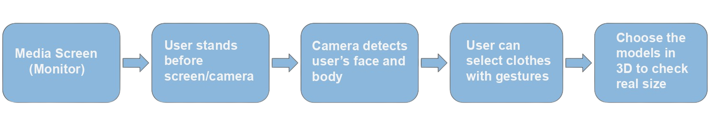
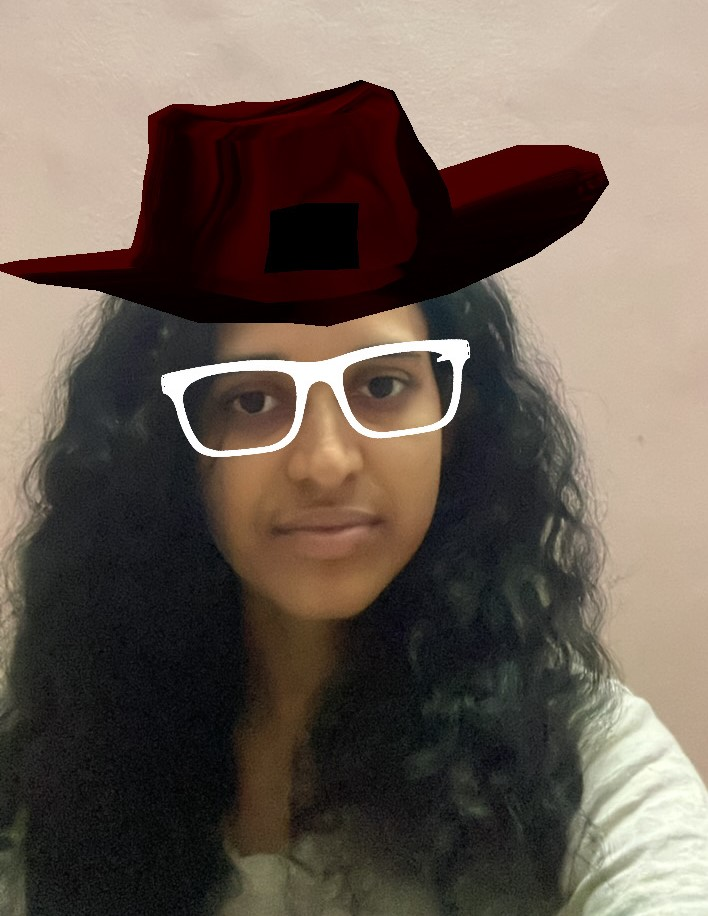

Smart Apparel
Smart Apparel
Overview
Smart Apparel is a solution for shopping with hand gestures to change between products. SPARK A.R.-based Smart Mirror brings the complete set of apparel in your hands. A primary goal of SPARK A.R.-based Smart Mirror is to create a system that can show clothing solutions on a mirror and use it to save time.
The Challenge
How can we improve the user experience in e-commerce applications where users can try on apparel virtually?
The Solution
We are here with a solution to this called 'Smart Apparel’. Having no time in their busy schedules, people can use their hand gestures to change between products from their hats to their shoes and save a lot of time without actually changing dresses.
The technology that we propose to use is based on SPARK AR and a simple camera and some specific scripts. With this project, we intend to save the shoppers' time.
Research
What are the existing issues and what are the different user needs?

Existing Issues
1. Less variety of product options or services in stores and pricier products.
2. Not able to decide the right size and styles online.
3. The size of the products bought may not fit.
4. Some products cannot be returned or refunded.
5. No time to travel to stores to try-on apparel to see if it fits rightly.
Our Approach
The technology that we propose to use is based on SPARK AR and a simple camera and some specific scripts. Bringing this idea we intend to save the shoppers' time.
FlowChart
This software is developed by following the 'Waterfall Model'. The Waterfall Model was the first Process Model to be introduced. It is also referred to as a linear sequential life cycle model. It is very simple to understand and use.
In a waterfall model, each phase must be completed fully before the next phase can begin. This type of model is used for projects which are small and there are no uncertain requirements.
At the end of each phase, a review takes place to determine if the project is on the right path and whether or not to continue or discard the project. In this model, the testing starts only after the development is complete.
Snapshot of Application
